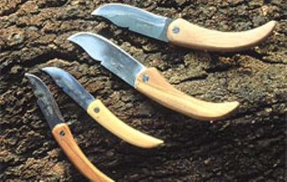

Avant de partir en Corse, il est important de bien préparer son voyage. Il faut bien entendu avoir en tête ce que l’on veut visiter en priorité. La Corse est grande, et se divise en deux sous régions: le nord et le sud. Il est fort probable que vous n’ayez pas le temps de tout découvrir. C’est pour cela que nous proposons dans cet article quelques lieux touristiques à voir absolument!
Tout d’abord, on ne peut mentionner cette magnifique régions sans parler de sa capitale: Ajaccio. Ville d’art et de caractère, située sur la côte Ouest, vous ne pourrez pas manquer son magnifique bord de mer fort appréciable en été qui vous permettra de pratiquer toutes sortes d’activités pour petit et grand (natation, voile, …).
Si le sport n’est pas votre fort, vous pourrez très bien vous promener sur le bord du mer auprès du grand port d’Ajaccio . Avec de la chance, vous pourrez y admirer le manège des bateaux de plaisance amarrant au port.
Si vous êtes d’humeur très matinale, vous pouvez vous offrir la chance d’observer les marins et pêcheurs se livrant à leurs tâches quotidiennes: livrer le fruit de leur pêche, et approvisionner les marchés. Enfin, si la marche n’est pas votre tasse de thé, vous pourrez très bien vous tourner au côté du célèbre petit train d’Ajaccio qui vous fera découvrir avec ses deux circuits de nombreux lieux mémorables.
De nombreux musées vous ouvrent également leurs portes et qui vous permettront d’étoffer votre savoir sur la région, avec notamment la cinémathèque de Porto-Vecchio sur le septième art, ou encore le musée de la préhistoire à Sartène. Enfin, le célèbre Musée de la Corse pour permettra d’apprendre multitudes de choses sur la Corse, entre ses traditions, coutumes et croyances, et ainsi que son histoire.
Vous préférez les grandes contrées sauvages aux villes urbanisées? Aucun problème. La Corse est également très connue pour son patrimoine authentique et préservée de toute activité humaine. Par exemple, les célèbres calanches de Piana, grandes colonnes de granit rouge flamboyantes, façonnées à travers l’érosion vielles de plusieurs millénaires, et qui s’étendent sur plusieurs centaines de kilomètres.
Vous pourrez également profiter de célèbres sentiers botaniques comme le parc de Saleccia.
Enfin, les enfants sauront apprécier les nombreux parcs animaliers de l’île de beauté comme le Parc naturel d’Olva et ses animaux de la ferme offrant de nombreuses activités (naissances, traites des chèvres, et bien plus).Le célèbre Parc A Cupulatta et ses célèbres tortues, unique en Europe, vaut également le détour avec ses 150 espèces de tortues, et plus de 3000 animaux vivant au sein de 2.5 hectares. Une visite mémorable pour petits et grands.
La Corse est également connue pour ses petits villages authentiques qui sauront vous accueillir. Nous pouvons citer par exemple le village de Piana situé entre la mer et la montagne, ou encore Sollacaro et Riventosa bâtis sur des falaises naturelles.
L’île regroupe aussi de nombreux artisans prêt à vous ouvrir les portes de leur univers. A l’aide de leur savoir-faire préservé depuis des siècles et transmis de génération en génération, et en s’inspirant de la culture locale, ils produisent des produits d’une qualité rare et exceptionnelle, reflets de leur passion pour le manuel, et trouvables nulle part ailleurs.

Parmi les différents secteurs d’artisanat (poterie, métallurgie, couture, …), nous vous conseillons vivement le verrier artistique de Dominique Campana qui vous fera témoin de son talent transmis de père en fils. Nous vous conseillons également l’atelier d’huiles essentielles de Michèle Pantalacci qui vous expliquera la transformation d’une fleur en huile, de la cueillette en passant par la distillation. La visite vous permettra également, à la fin de votre visite, de repartir avec vos propres essences. Enfin, la coutellerie artisanale de Patrick Martin vous permettra de découvrir une activité phare de la Corse. Vous pourrez aussi découvrir l’artisan en plein travail. Avec un peu de chance, vous aurez également la possibilité de repartir avec votre propre couteau, réalisé telle une oeuvre d’art.